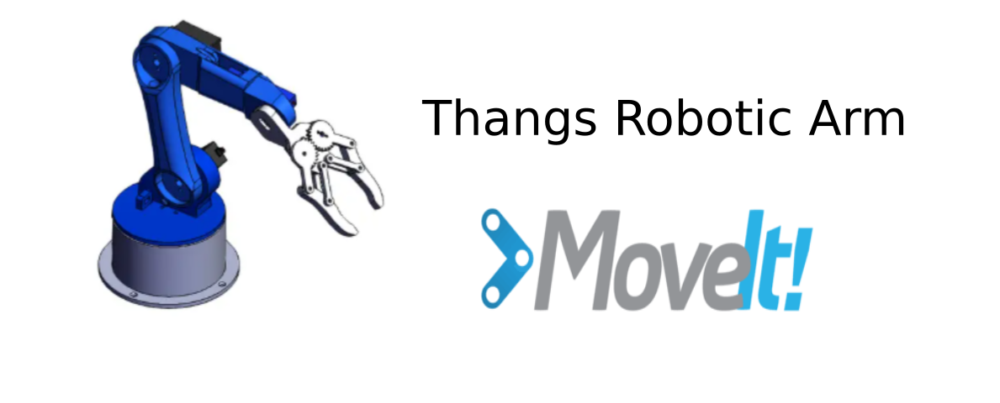
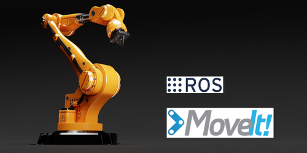
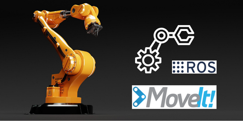
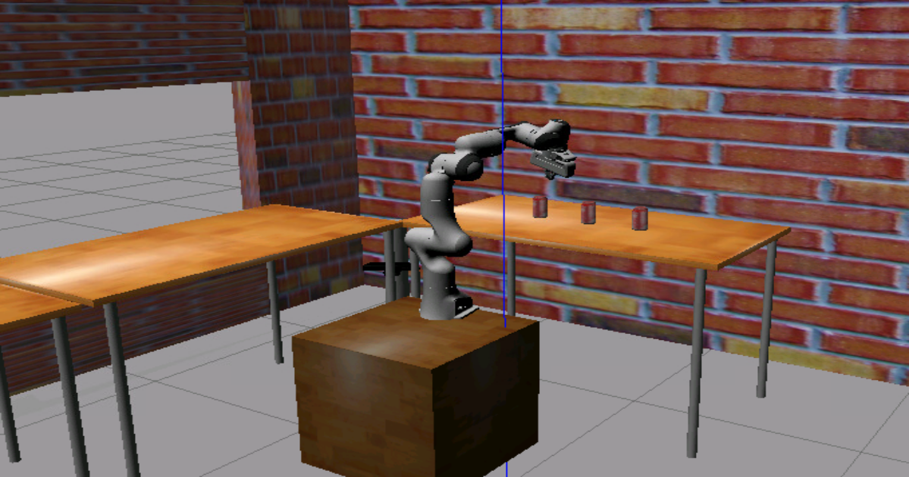

Manipulação Robótica 101
Manipulação Robótica 101: Este curso aborda os conceitos de manipulação robótica utilizando o ROS e suas ferramentas.
Tutoriais MoveIt
Introdução ao MoveIt
Assista a este vídeo introdutório sobre o MoveIt (em inglês).
Tutorial MoveIt

Demonstração 1 - Braço robótico Thangs

Movimentação UR5 com garra Robotiq

Projeto 1 - Cinemática direta com UR5
Utilização do MoveIt! - Cinemática Reversa com UR10
